Live Demo
Screenshot Walkthrough
Normal User (Student) Experience
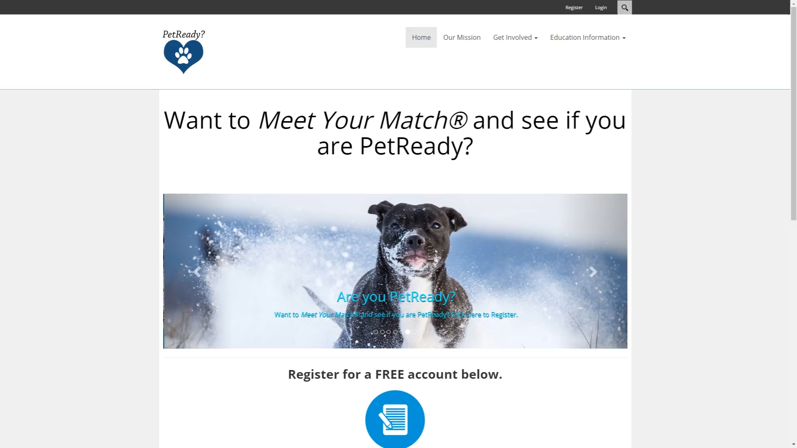This is the home page for our site. From here, users are able to register for an account as well as see information related to the partnered shelters, educational information, and available resources.
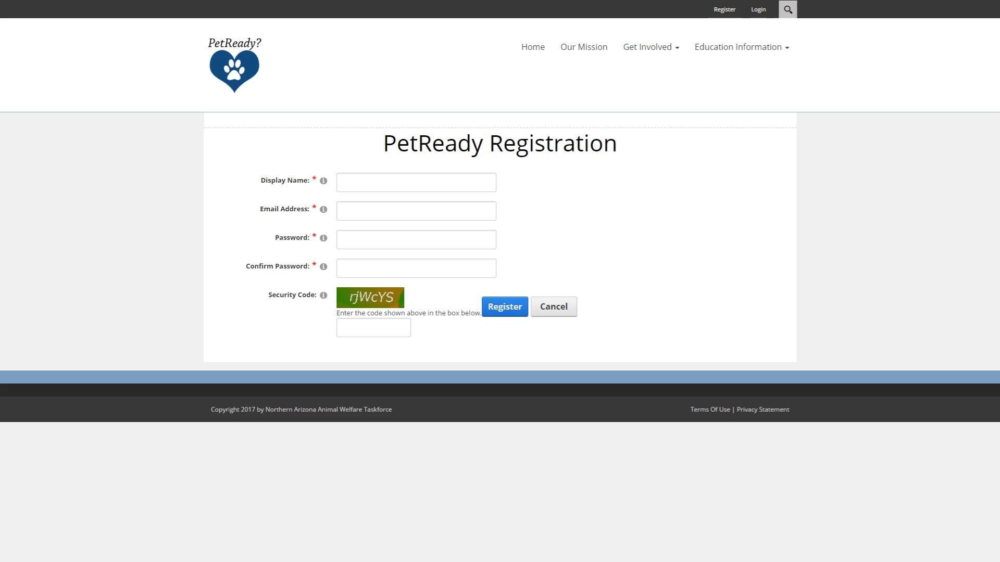
This is a the registration page for users. We are using captcha to help prevent spam from flooding the system.

This is the page that all users see once they have signed into the site. If they are a new user, they will see a message prompting them to complete the readiness questionnaire, but if they have completed the readiness questionnaire a different message will be displayed.
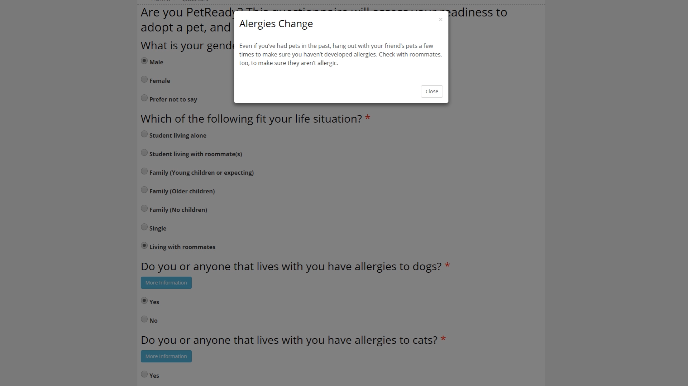
This is a snippet of the readiness questionnaire. In this screenshot, you see one of the many educational popups these are used to educate the user of the potential costs and needs for adopting a new pet.
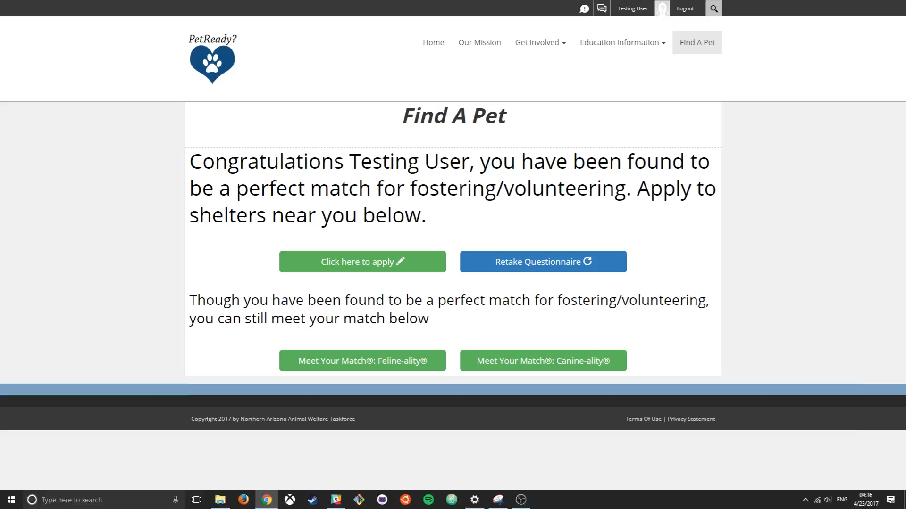
Once the user has completed the readiness questionnaire and have been found to not be an ideal candidate for adoption, they are prompted to apply for fostering. We are currently offering the ability to retake the questionnaire if something in the user's life has changed so they can see if they are now PetReady. As a reward for taking the readiness questionnaire we offer them the ability to meet their match through the ASPCA feline-ality and canine-ality questionnaires.
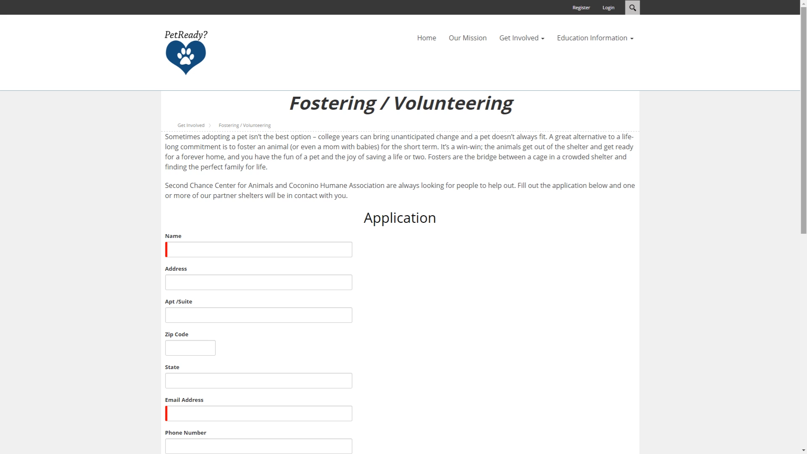
This is a snippet of the application for fostering and volunteering, the results of the application are sent to all the partnered shelters.
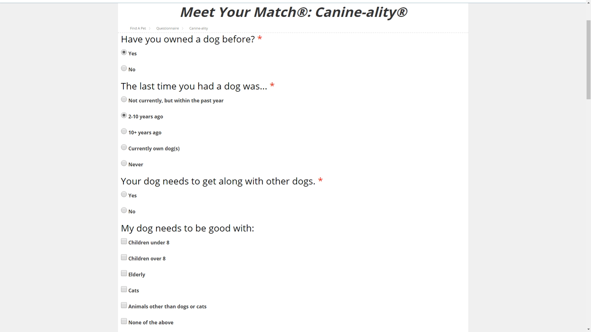
This is a snippet of the Canine-ality questionnaire. Both this and the Feline-ality are based off the ASPCA Meet-Your-Match paper based forms.
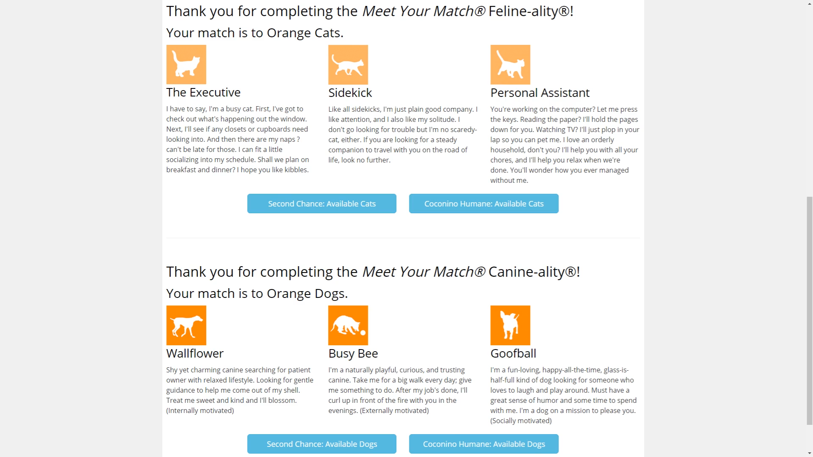
This is a screenshot of the results that are displayed back to the user. As you can see I was matched with Orange Dogs and Cats. Under the examples, you are able to see the available animals at the partnered shelters.

This is a screenshot of the available dogs at Coconino Humane Association.
Administrator User Experience
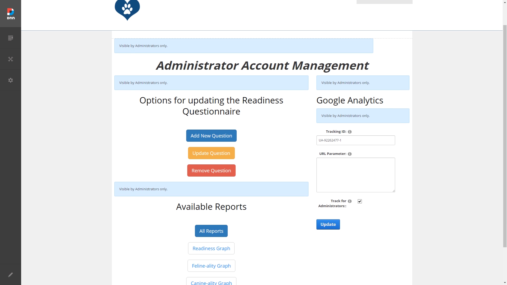This is the screen for administrators to use the different utilities offered to them.
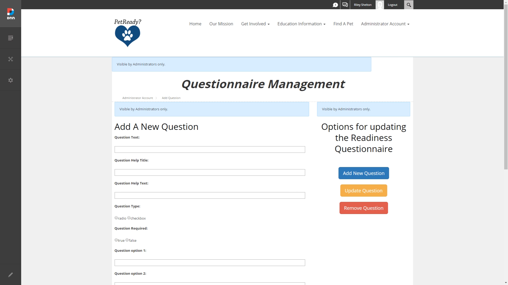
This is the form administrators use to add a question to the questionnaire.
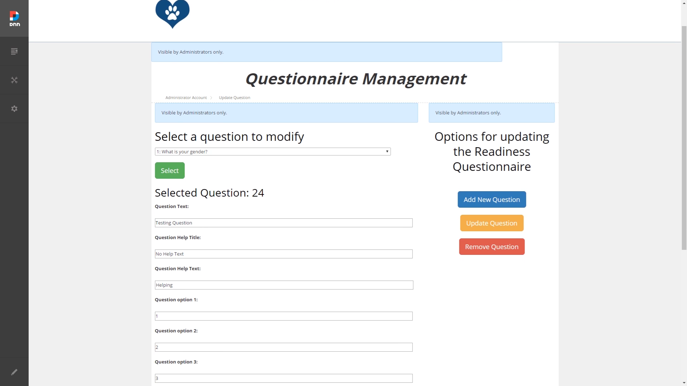
This is the form administrators use to modify an existing question on the questionnaire.
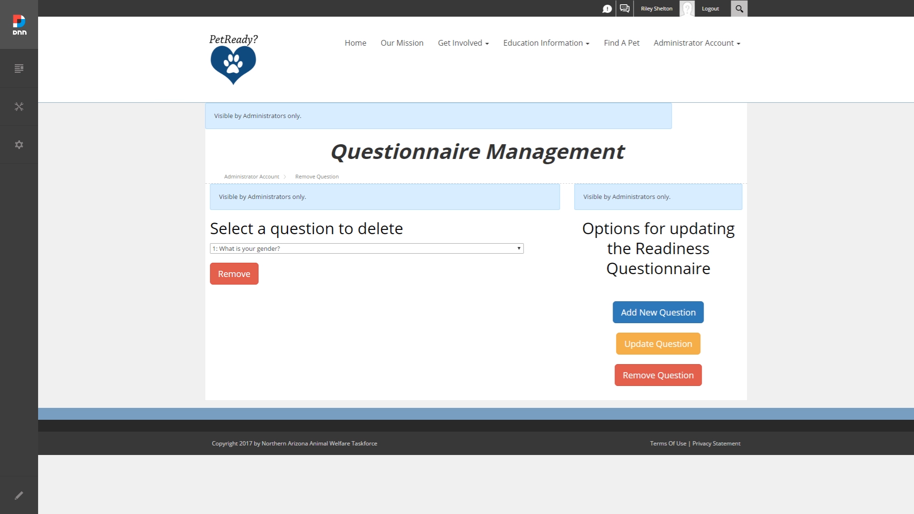
This is the form administrators use to delete a question from the questionnaire.